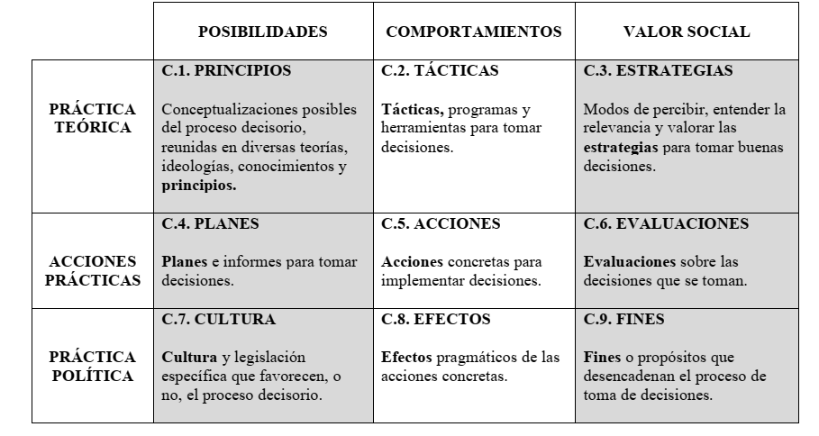
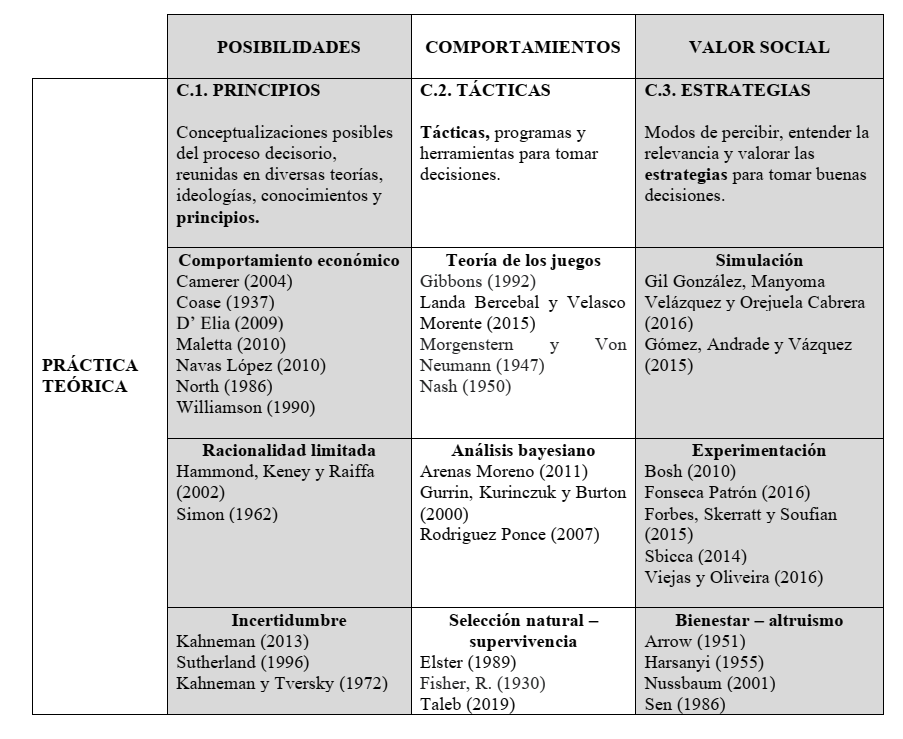
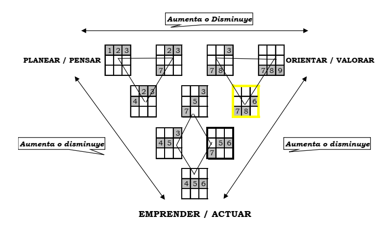

11 Los 10 tipos de signo en C.S. Peirce y su implicación en el proceso de toma de decisiones.
“En un contexto como el actual, complejo, globalizado y competitivo, se espera que las decisiones que toman los directivos de las organizaciones sean no solo eficientes sino también creativas. En particular, en las empresas familiares, a estos requisitos se agrega la rapidez que frecuentemente se necesita en el proceso de toma de decisiones.
Bajo la presión de estas exigencias muchas veces se descuidan aspectos importantes que componen la estética organizacional y que impactan en las relaciones interpersonales. Por ejemplo, el diseño del lugar de trabajo, las condiciones físicas del ambiente laboral, así como el ritmo de trabajo y el trato cuidadoso de las personas, entre otros.
Este artículo presenta los resultados de una investigación que relevó una muestra de 130 individuos. Para analizar las dimensiones y los diferentes aspectos que involucra un proceso de toma de decisiones se utilizó una perspectiva semiótica, que es más amplia que el abordaje teórico tradicional de la teoría de la decisión. Los resultados presentan tres perfiles o estilos de decisores, que le posibilitan al lector inferir cuál es el propio. Además, se presentan 10 tipos de procesos decisorios de acuerdo con las nociones de 10 tipos de signo de C. S. Peirce. Esta identificación permite armonizar la estética, la ética y la lógica en el proceso de toma de decisiones y seleccionar la tipología más apropiada de acuerdo con la identidad de la organización, sus fines o propósitos y el área en la que actúa.”
Decisión, Proceso Decisorio, Perfil del Decisor, Semiótica
Introducción
En este trabajo se analiza el proceso decisorio bajo una perspectiva semiótica que, con su análisis triádico de los fenómenos, enriquece el abordaje tradicional basado en relaciones causa-efecto. Así, se exponen las razones por las cuales la semiótica puede ser aplicada al análisis de los procesos decisorios. A continuación, se describe la estrategia metodológica que se utilizó con el denominado Método para el Análisis de las Investigaciones en Administración (MAIA) y se presentan los resultados y la discusión de éstos, con las consecuentes lecciones aprendidas, que pueden resumirse en dos grandes ejes: en el primero, se perfilan tres tipos de personas que toman decisiones con sus respectivos estilos: los humanistas, los administrativos y los intuitivos y en el segundo se presentan 10 tipos de procesos decisorios con sus correspondientes atributos. Finalmente, se exponen las conclusiones.
La Semiótica como Fundamento del Análisis del Proceso Decisorio
Las ideas de Charles Sanders Peirce (1839-1914), constituyen el fundamento teórico-metodológico de este trabajo. Peirce es considerado el fundador de la corriente de pensamiento denominada pragmatismo y también “padre” de la semiótica contemporánea, entendida como una teoría filosófica de la significación y de la representación.
En el ámbito de la gestión y de las organizaciones, la semiótica ha contribuido con investigaciones y estudios sobre gestión estratégica (Singer 2010), como refuerzo de los fundamentos teóricos en los procesos de gestión del conocimiento (Sjarbaini y Jorna 2013) y en el estudio de la comunicación mediática (Andacht 2013), entre otras aplicaciones.
Un signo o mediación semiótica es cualquier cosa que relacione una situación singular con significados más amplios (pasado, futuro, categorías sociales e institucionales, etc.) y hace que la situación "desborde" sus límites temporales, espaciales y sociales (Lorino 2014).
Los enfoques semióticos se concentran en la articulación de los significados más que en los significados mismos; intentan exponer los procesos de producción de significado. Por lo tanto, son teorías de la significación que se centran en la forma del contenido.
Los estudios sobre Peirce y su obra son vastos. Algunos de ellos se enmarcan en “aplicaciones” de su teoría como, por ejemplo, el nonágono semiótico de (Guerri 2016). Sobre la base de este modelo operativo, es posible construir una matriz conceptual para abordar el fenómeno que interesa en este trabajo, es decir, el proceso decisorio.

Fuente: Cuadro de elaborado sobre la base del nonágono semiótico de (Guerri 2016).
Teniendo en cuenta las dimensiones que integran el fenómeno del proceso decisorio, se procedió a analizar la Práctica Teórica, es decir, los Principios, las Tácticas y las Estrategias que recomienda la bibliografía sobre la temática. Pretender realizar un relevamiento exhaustivo de la producción teórica hasta la fecha sería una tarea, además de abrumadora, infructuosa, porque no se conseguiría abarcar todas las dimensiones expuestas en la matriz conceptual. De modo que se procedió a clasificar, de un modo general, las principales corrientes de pensamiento sobre la toma de decisiones y a presentar algunos de sus exponentes.

De la revisión teórica expuesta se extrajeron los principales conceptos que enuncian los autores, que luego se contrastan con el resultado del estudio empírico. Por ejemplo, en el cuestionario que se utilizó para determinar qué se valora más en términos de Principios o conocimientos previos para tomar una decisión, se ofrecieron las alternativas: “La Economía para maximizar los beneficios” (Williamson 1990); “La Administración, para tomar decisiones racionales”, (Herbert Alexander Simon 1962) o “La Psicología, para evitar sesgos”, (Tversky y Kahneman 1974), entre otras.
Para determinar qué se utiliza más en cuanto a las Tácticas, programas y herramientas para tomar decisiones, las alternativas presentadas fueron: “Utilizo procedimientos formales que asignan criterios numéricos para la decisión, (Gurrin, Kurinczuk, y Burton 2000) o”Utilizo herramientas de decisión como la teoría de los juegos o softwares para decidir” (Gibbons 1992). También se consideró la alternativa “No utilizo ninguna herramienta habitualmente”.
En el caso de las Estrategias que se consideran más importantes para tomar buenas decisiones, las opciones también giraron en torno a la tendencia de buscar la “Precisión o exactitud de análisis” mediante algoritmos o simulaciones, (Gómez, Andrade, y Vásquez 2015) o buscar en la experimentación (Viegas y Oliveira 2016) la “Eficacia para el cumplimiento de los objetivos”. También se incluyeron alternativas que “Consideran los requerimientos de otros participantes externos a la organización” y la “Transparencia y responsabilidad social” (Sen 1986).
En función de las alternativas planteadas y para armar el cuestionario para llevar a cabo el estudio exploratorio, se utilizó el Método para el Análisis de las Investigaciones en Administración (MAIA), basado en la semiótica de Peirce1 y presentado en Jornadas anteriores.
El método MAIA consta de tres pasos o procesos: 1) el armado de la matriz conceptual general; 2) el armado de la matriz conceptual específica del fenómeno (signo) que se analiza, en este caso el proceso decisorio y 3) el armado del cuestionario.
Para elaborar las preguntas o proposiciones para cada uno de los cuadrantes expuestos en el Cuadro 1, se tuvo en cuenta la revisión teórica que muestra el Cuadro 2, complementada por proposiciones sugeridas por la práctica de la gestión.
Se conformó una única base de datos a partir de una muestra de 130 individuos. En las preguntas o proposiciones se solicita a los encuestados que las valoren en un rango de 1 a 10 puntos, siendo 1 lo menos valorado y 10 lo más valorado. Cada una de estas respuestas constituye una variable de escala que se denomina con el primer dígito indicando el casillero lógico de la matriz y con el segundo dígito el orden de la pregunta. Así, la primera pregunta del Cuadrante 1 se denomina C11, la segunda C12 y así sucesivamente. La matriz numérica resultante se procesó utilizando el software estadístico SPSS.
La matriz de datos contiene 68 variables de escala (preguntas del cuestionario) que, multiplicadas por las 130 respuestas de la muestra original, se obtienen los 8.840 valores que se analizaron para, en la medida de lo posible, adecuar la distribución de las variables a la normalidad a los efectos de garantizar la calidad de los resultados posteriores. En el análisis se estandarizaron las 8.840 observaciones calculando el valor “Z”, que se obtiene restando el valor observado de la media de la población y dividiendo el resultado por la desviación estándar. Para una muestra mayor de 80 personas, las recomendaciones estadísticas sugieren considerar valores atípicos u outliers a aquellos valores con “Z” superior a 3. Así la muestra depurada de casos atípicos resultó en n=122.
Resultados
En una primera etapa de análisis de los resultados se correlacionaron las variables y se seleccionaron las más valoradas en cada uno de los casilleros lógicos de la matriz de resultados. Peirce propone en sus textos organizar los casilleros lógicos de la matriz siguiendo una clasificación que denominó “los diez tipos de signo” (CP 2.254 a 2.264). Esta organización se basa en los diferentes énfasis que se otorgan a las posibilidades, los comportamientos y las valoraciones y que surgen como consecuencia de la aplicación de reglas. Así, los diez tipos de signos siguen reglas de combinación que responden a las relaciones de necesidad que establecen las categorías peirceanas y que, entre las 27 matemáticamente posibles, son semióticamente viables. Guerri (2016), citando a Magariños de Morentín, describe el procedimiento de construcción de las diez clases de signos de la siguiente manera:
cada una de las hileras –correlatos– está jerárquicamente ordenada con respecto a las restantes (cada hilera inferior contiene a las superiores), de modo que la inferior puede articularse con elementos de la superior, pero no a la inversa;
de cada hilera no puede tomarse más que un elemento por columna –tricotomía–, sin repetir y sin que falte ninguna columna, ya que, en definitiva, se está reconstruyendo el signo, y
el orden de selección de elementos de las respectivas columnas seguirá siempre la secuencia de forma, existencia y valor, es decir, primeridad, segundidad y terceridad, en la integración de cada signo (p. 26).
En la Figura 1 pueden observarse los diez tipos de signo que enunció Peirce, aplicados al fenómeno del proceso decisorio. En esta investigación la muestra presentó resultados correspondientes al tipo de signo 7 - 8 - 6.
Figura 1. Los 10 Tipos de Signo

Fuente: Cuadro de elaboración propia a partir de Peirce (CP. 2.254-64)
Siguiendo la lógica de los 10 tipos de signo peirceanos, es posible enunciar 10 tipos de procesos decisorios. Para seleccionar los atributos de cada tipo, se tomaron las variables que tuvieron hasta el tercer mayor promedio.
A continuación, se enuncian los diez tipos de procesos decisorios con algunos de sus atributos:
- Tipo teórico: énfasis en los casilleros 1 - 2 - 3
Se apoya en teorías y conocimientos de la disciplina de la Administración para tomar decisiones racionales.
- Tipo comunicativo: énfasis en los casilleros 4 - 2 - 3
Participa en reuniones en la que se analiza oralmente la situación.
- Tipo estratégico: énfasis en los casilleros 4 - 5 - 3
Se apoya en informes y referencias de situaciones pasadas antes de tomar decisiones.
- Tipo práctico: énfasis en los casilleros 4 - 5 - 6
Considera que las acciones más relevantes en el proceso decisorio son las relacionadas con cuestiones concretas como la venta, la compra, la cobranza, el pago, la fabricación, la atención al cliente, el traslado propio o de cosas.
- Tipo facilitador: énfasis en los casilleros 7 - 5 - 6
Valora como mejores las decisiones que son aceptadas y reconocidas internamente.
- Tipo pragmático: énfasis en los casilleros 7 - 8 - 6
Estima que la objetividad es un factor previo que favorece la toma de decisiones.
- Tipo valorativo: énfasis en los casilleros 7 - 8 - 9
Estima que las reglas de juego claras son un factor previo que favorece la toma de decisiones.
- Tipo lógico: énfasis en los casilleros 7 - 5 - 3
Considera que la estrategia más importante para tomar buenas decisiones es tener exactitud en el análisis (precisión).
- Tipo técnico: énfasis en los casilleros 7 - 8 - 3
Supone que los efectos más benéficos de las acciones que se realizaron en el proceso decisorio son los económico-financieros.
- Tipo razonable: énfasis en los casilleros 7 - 2 - 3
Solicita la recomendación de pares para que amplíen las posibilidades planteadas en la decisión.
En una segunda etapa se utilizó como herramienta estadística el análisis factorial y, mediante la agrupación de las variables, se pudieron identificar tres tipos de perfil de personas que toman decisiones: 1) El perfil humanista. Si bien tiende a basarse en su experiencia e intuición, considera que la filosofía es un saber valioso para tomar decisiones éticas, 2) El perfil administrador. Considera que los saberes más importantes para tomar decisiones son la economía –para maximizar los beneficios– y la administración, para tomar decisiones racionales y 3) El perfil intuitivo. No acostumbra a pedir informes. No utiliza ninguna herramienta técnica para auxiliar el proceso de toma de decisiones y valora como mejores las estrategias que contemplan la rapidez y la oportunidad.
Conclusiones e Implicancias Prácticas
Las principales conclusiones e implicancias prácticas que se desprenden de este trabajo, en primer lugar, es el aporte del método MAIA y la matriz del proceso decisorio. El método combina teoría y práctica para indagar fenómenos complejos en las organizaciones. Así, para elaborar el cuestionario que ayuda a pensar el fenómeno que se pretende investigar, es necesario conocer los fundamentos teóricos y la puesta en marcha de éste. El cuestionario debería ser elaborado por todos los agentes que están involucrados en la investigación, y así se desarrolla una modalidad pragmática de obtener conocimientos, al conformar una comunidad de investigación (Dewey 1986).
En segundo lugar, reagrupando las respuestas de las diferentes áreas o casilleros lógicos, es posible construir numerosas hipótesis, de un modo creativo, utilizando la lógica de la abducción. Estas hipótesis pueden ser corroboradas mediante métodos cuantitativos. Como lo expresado en valores por los encuestados se traduce en una matriz numérica, a partir de ella, se pueden diseñar modelos que representan las hipótesis y luego someterlos a prueba bajo algún modelo de ecuaciones estructurales. Estos modelos son herramientas útiles para el estudio de relaciones causales de tipo lineal y ayudan al investigador a corroborar o rechazar hipótesis causales.
En tercer lugar, conocer el perfil del decisor puede ser particularmente útil en las empresas familiares, en las que muchas veces los miembros de la familia comparten el proceso decisorio, de modo que sería deseable que los perfiles de quienes deciden sean similares, para evitar desencuentros en las opiniones y/o valoraciones.
Por último, los diez tipos enunciados en este trabajo surgen de una combinación reglada de principios lógicos de la semiótica, es decir, modos de adoptar configuraciones particulares con énfasis en algunos aspectos formales, existenciales y valorativos.
Cabe destacar que los tipos mencionados son solamente ilustrativos, ya que la percepción del proceso decisorio es subjetiva, depende de las personas que trabajan en la organización, su edad, su educación y antigüedad, entre otros factores y características personales. También puede diferir según el sector de actividad o el sector de actuación de la organización que se analiza. Lo importante es conocer cuál es la percepción que tienen los participantes en los diferentes niveles decisorios, buscando la coherencia entre sus percepciones y la realidad de la vida organizacional.
Al establecer vínculos entre el sector de actividad o tipo de organización, con sus fines o propósitos es posible identificar el tipo de proceso decisorio más adecuado. En efecto, las organizaciones pueden tener la misma actividad, pero sus fines o propósitos pueden ser diferentes. Por ejemplo, una empresa del ramo agropecuario puede tener como fin dedicarse a la producción de commodities como el trigo o el girasol y otra puede dedicarse a la plantación de vides para la producción de vinos. El sector de actividad es el mismo, pero los fines son diferentes, por lo tanto, el tipo de proceso decisorio más adecuado también es diferente.
En el primer caso el tipo más apropiado es el teórico, ya que para obtener mejor rentabilidad debe producir con bajos costos, dado que el precio de venta está establecido por el mercado internacional. De ese modo, se requiere apoyarse en teorías y conocimientos de la disciplina de la Administración para tomar decisiones racionales. También es necesario recopilar datos para evaluar costos y beneficios y medir cada alternativa de decisión, en este caso decidir qué tipo de cultivo sembrar. La estrategia para tomar buenas decisiones será aquella que tienda a cumplir con los objetivos de manera eficaz.
En el segundo caso el proceso decisorio más apropiado es el facilitador, que considera que las acciones más relevantes en el proceso decisorio son las relacionadas con la comunicación. En particular, si la marca de los vinos que produce no es muy conocida, se requieren acciones de comunicación que generen contenidos, así como la promoción de eventos para degustación. Estas acciones surgen como consecuencia de decisiones aceptadas y reconocidas internamente, tanto por el personal de marketing como por los enólogos y las personas involucradas en la producción. Otro atributo de esta tipología es que estima que la disponibilidad de información es un factor previo que favorece la toma de decisiones, en particular, por ejemplo, el conocimiento histórico de las cosechas y el referido a la calidad de los productos.
En resumen, la concepción triádica de Peirce en cuanto a las categorías de los fenómenos que se presentan en la realidad puede resultar un instrumento útil para la investigación en el ámbito de la gestión en las organizaciones, especialmente si se considera que es importante articular la teoría con la práctica del proceso decisorio, cada vez más complejo en el mundo actual.
Referencias
El método MAIA se utilizó para investigar diversos fenómenos como la sostenibilidad de las organizaciones (Sastre 2016), el significado del trabajo (Sastre 2018), la calidad de vida (Sastre 2018) y la belleza de las organizaciones, entre otros.↩︎
Esta página es distribuida por la Universidad de Navarra y el GEP https://www.unav.es/gep/